About 75% of the internet speaks a language other than English. Some of these other languages read Right-to-Left (RTL), which can completely ruin the layout of your designs.
Cultural and linguistic peculiarities can be a hassle when you’re developing for different regions and markets. Specifically, when it comes to the RTL market developers must use their knowledge to adhere to a completely different set of rules, making the whole process more challenging and potentially frustrating.
In order to be effective in developing right-to-left (RTL) applications, there are a number of specific details that need to be taken into account, create a new Theme and Localize your product.
You can extend the default Arabic RTL Language object or create your own and translate all the necessary labels for your application. Take into account the Is Right To Left property must be set accordingly.
Check more information on the Application Localization section.
Notice that graphics that include text usually require localization.
First and foremost, the interface must be flipped from right to left. In RTL language regions, people read and write from right to left. This means that most interface elements should be flipped in order to be displayed correctly.
Here’s an example of Facebook’s left-to-right (LTR) design vs RTL:
| 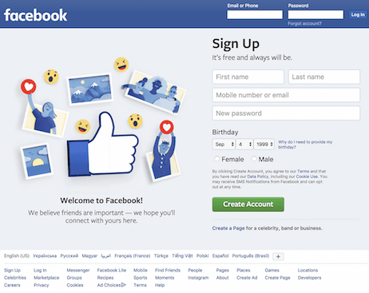 | 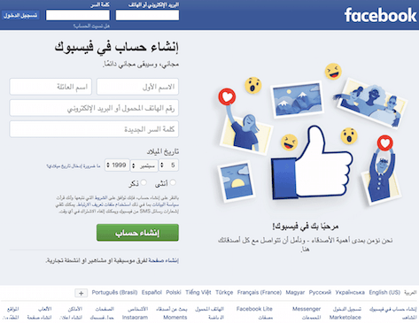 |
Notice a LTR design:
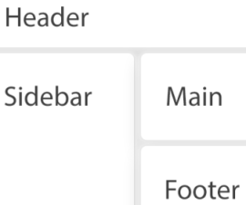
needs to be mirrored
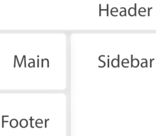
When a UI is mirrored, these changes occur:
These items are not mirrored:
Let's discuss what you need to worry about.
When using Smart Devices this is automatically done by the platform, the GeneXus application will notice it is using a RTL language so the mirroring will happen when needed.
When using Web applications, you need two Design System or Theme objects. One to be used with standard LTR interfaces and a second one to mirror your default. You need to apply the correct configuration on different controls and your Theme/DSO classes. For reference, you will notice a Carmine and CarmineRTL themes for such purposes. How to create your new Theme to RTL?
If you already have a RTL Theme follow these steps to convert it to DSO:
To create a RTL DSO object:
Try as hard as you can to avoid using bold and italics. Bold text would make readability extremely difficult in most RTL languages (especially Arabic), and italics is simply never used. As well, capital letters are almost always disregarded in RTL languages.
If you need to highlight a certain part of a text in Arabic, overline it instead of underlining, interspacing or italicizing. You can use the overline text-decoration CSS property.
Make sure that all text is aligned to the right, and that font and font size are adjusted properly (better yet, customize them) because Latin fonts tend to affect Arabic readability rather poorly.
Also, remember that words in RTL languages are often much shorter than words in English. So, adjust to keep a balance in how text is displayed on the page.
Using icons in RTL development can be tricky. Keep in mind that some of them might have to be mirrored, and some could be considered offensive to people of some nationalities, so double-check that the icons you’re using make sense.
Icons that are symmetrical and that don’t point in a particular direction should not be flipped.
In case you use special meanings you will have to mirror them and change them at design or runtime. GeneXus will do the standard mirroring of Images such as paging buttons:
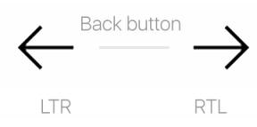
Logos, navigation buttons and menus should be located in the upper-right corner for RTL design. The two latter elements also need to be displayed in reverse order.
Elements connected with media-content management, such as play and pause buttons in a video player, don’t need to be mirrored, check a Youtube sample:
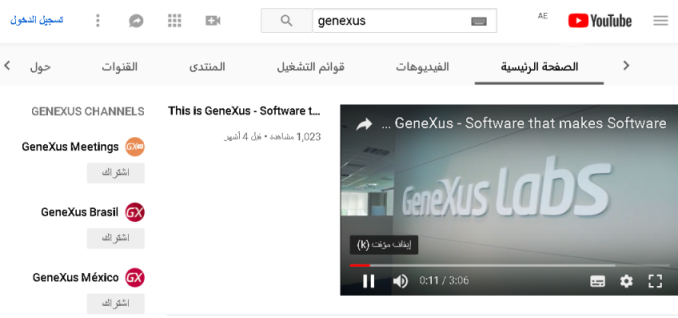
The order of digits in numbers (such as phone numbers) doesn’t differ from left-to-right writing; should not be changed for RTL.
The digits are displayed in the same order in both LTR and RTL, but the icons change position. Consider the following example with a phone number:
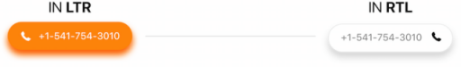
Centering controls and creating a “liquid layout” can help avoid confusion and can better the user’s experience with your application.
The elements in the bottom tab bar below should be positioned from right to left, see example below:
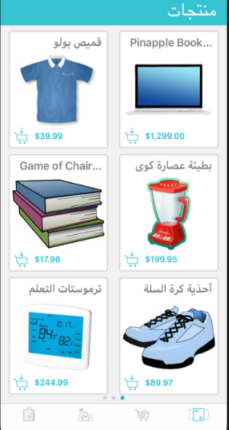
Navigation drawers should appear from the right side.
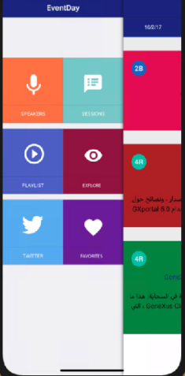
When combining symbols that can be used in both RTL and LTR languages (such as periods, commas, or other punctuation marks), their displayed positions will depend on the direction of the text. This is because the data format starts from the beginning, but a browser is still processing an RTL word in the RTL direction and punctuation is converted towards the direction that has been specified.
Take the following image, the question mark symbol are correctly set but the Arabic text is not aligned to the right side.
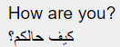
Changing the alignment to the right solves the problem but creates a new one related with the question mark symbol.
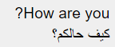
To fix this problem, try converting RTL and LTR strings (or text fragments) into separate elements, for example, use different Textblocks. Then, specify their direction with either the dir attribute or the CSS direction property, for that matter changing the associated Theme class.
iOS: When using numeric values in an Edit control, it is automatically transformed to a string using the NSNumberFormatter class using the current language locale. It means that by default Arabic numbers will be displayed in a read-only interface. To display characters in another language, use a String variable and format it with the desired language. The following example shows the default LTR interface on the left side and the same one in RTL mode; notice the mirroring of the numbers and presentation changes.
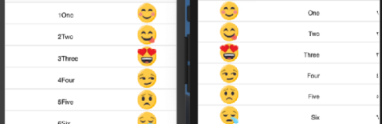
In order to display Arabic texts in PDF reports, the fonts used need to be embedded in the documents using the PDFReport.ini file. An example of the lines needed in PDFReport.ini file are:
Embeed Fonts= true [Embeed Fonts] Arial Unicode MS= true Microsoft Sans Serif= true [Fonts Location (Sun)] Arial Unicode MS= c:\windows\fonts\arialuni.ttf Microsoft Sans Serif= c:\windows\fonts\micross.ttf
Notice that if you use variations such as Bold they need to be embedded too
Arial Unicode MS,Bold= true ... Arial Unicode MS,Bold= c:\windows\fonts\arialuni.ttf
If using runtime translation with RTL and LTR languages, you can switch between them in the following way, using SetTheme and SetLanguage functions in conjunction. For example, suppose you use English and Arabic languages; the Web Master Panel object could include the following code:
Event 'SetEnglish'
&i = SetTheme(!"Carmine")
&i = SetLanguage(!"English")
refresh
EndEvent
Event 'SetArabic'
&i = SetTheme(!"CarmineRTL")
&i = SetLanguage(!"Arabic")
refresh
EndEvent
This will enable a smooth transitioning between interfaces once a language change is detected.
For Smart Devices you don't need to change the Theme object, set the desired language and its recommended to set a GoHome command (Actions external object):
Event 'Arabic'
Composite
&Numeric = SetLanguage(!"Arabic")
Actions.GoHome()
EndComposite
Endevent
Event 'English'
Composite
&Numeric = SetLanguage(!"English")
Actions.GoHome()
EndComposite
EndEvent
The IDE Rules and Events editor is not ready for Bi-Directional editing yet. For those cases where RTL text must be set, use the RTL Language object to localize the associated texts and Application Localization to set the correct language in runtime.
Other options are to encapsulate the text on Enumarated domains, for example:
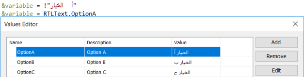
Material Design bidirectionality section.
| Backlinks | |
| Is Right To Left property | RTL checklist |